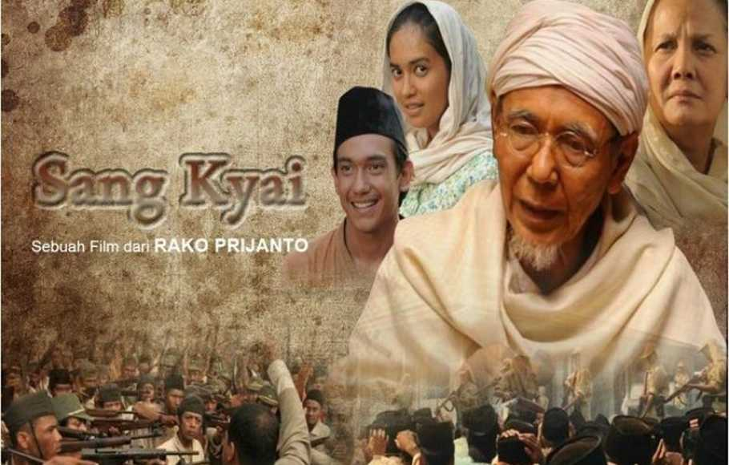
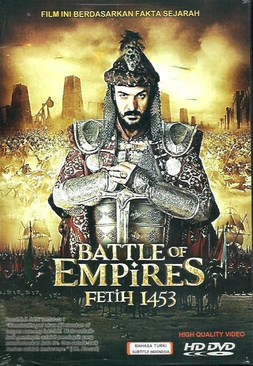

Sang Kyai
Perang dunia ke-2 pecah di Pasifik. Balatentara Jepang menyerbu nusantara yang saat itu sedang dijajah Belanda. Belanda akhirnya berhasil terdepak dari nusantara. Untuk merebut hati penduduk Nusantara, Jepang berkonsultasi dengan para ulama kharismatik seperti KH Hasyim Asy'ari. Jepang berjanji akan melatih para santri kemampuan kemiliteran untuk dapat membantu Jepang. Hingga terbentuklah Laskar Hizbullah. Di akhir perang pasifik, Jepang kalah dan Sekutu berniat membantu Belanda menjajah kembali Nusantara. KH. Hasyim Asy'ari akhirnya mencetuskan resolusi jihad, memobilisasi para santrinya yang telah dilatih perang Jepang serta ribuan muslim fanatik lainnya untuk berjihad mengusir penjajah. Hingga pecahlah peristiwa pertempuran 10 November.
🎬 Lihat Trailer
Guru Bangsa Tjokroaminoto
Pasca meninggalnya Pangeran Diponegoro, rakyat Nusantara kehilangan sosok pemimpin untuk melawan kolonialisme. Hingga muncullah seorang tokoh bernama Tjokroaminoto. Bersama sejawatnya, beliau mendirikan Syarekat Islam. Organisasi politik non-kekerasan yang menginginkan nusantara merdeka di bawah Syariah Islam. Lambat laun, SI semakin mendapat simpati rakyat dan ditakuti Belanda. Belanda bersiasat dengan menyusupkan paham komunis di SI lalu memprovokasi kader SI Merah untuk memberontak. Tokoh-tokoh SI akhirnya ditangkap karena dituduh medalangi pemberontakan. Tjokroaminoto adalah murobbi dari para tokoh Nasional seperti Kartosuwiryo, Soekarno, dan Muso.
🎬 Lihat Trailer
Lion of The Desert
Film ini berlatarbelakang era penjajahan Italia terhadap Libya pasca keruntuhan Khilafah Ustmani. Alkisah para prajurit italia dihadapkan pada perlawanan yang sangat gigih dari rakyat Libya hingga membuat Italia kewalahan. Pemimpin perlawanan rakyat Libya sangat terkenal dan ditakuti para perwira Italia hingga disebut dengan julukan "Singa Padang Pasir". Seorang Jenderal yang ambisius reputasi akhirnya dikirim ke Libya untuk menangkap sang Singa Padang Pasir. Sang singa akhirnya tertangkap, dan betapa terkejutnya para perwira Italia bahwa pemimpin perlawanan Libya itu ternyata hanyalah seorang guru ngaji yang sudah tua renta bernama Omar Mokhtar.
🎬 Lihat Trailer
Battle of Empires, Fetih 1453
Semenjak kecil, Mehmed 2 selalu dibacakan oleh gurunya tentang Hadist Rasulullah bahwa kota konstantinopel akan dibebaskan oleh sebaik-baik panglima. Gurunya memotivasi agar anak didiknya itu yang nantinya dapat mewujudkan Hadist Rasulullah tersebut dan menjadi sebaik-baik panglima. Karena termotivasi, jadilah Mehmed 2 tumbuh dalam suasana ketaatan, memperbanyak ibadah, dan menjauhi kemaksiatan. Hingga saat dirinya dinobatkan menjadi Sultan Ustmani, dirinya akhirnya berusaha untuk mewujudkan impian masa kecilnya, membebaskan kota Konstantinopel.
🎬 Lihat Trailer